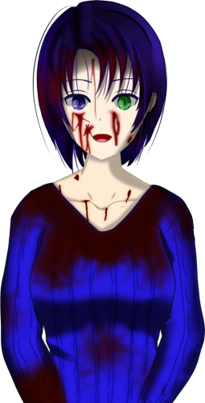

Script 00002330
Now, more importantly, Erina Goto said it a little while ago, did she not?
That the cause of the tragedy just now was the Kogori couple going near the Arata settlement.
Then, how could that have been prevented, and a better ending reached?
I would like to guide you to that route, but for that, we need to go far back in time.
Yes, back when Natsumi Kogori and the others were still small, there was an event that, though trivial, made the route branch greatly.
Now then, let us go. I will guide you.
"Who burned the storehouse of the Niimura main house, that is."
"Just as Erina Goto and the others were closing in on Shigatsu Youka, the storehouse at the Niimura main house was burned and its precious books were lost."
"That mystery had not yet been solved, had it."
"Now, few scenarios remain, but let us go and see them. This is the last spurt."

"Thank you for your hard work, You-sama."

"Ah, it seems the interference noise has finally cleared. My form, too, should be visible as it was before."
"Now, through their cooperation, Shigatsu Youka has been destroyed."
"It seems it was all a scheme of Shigatsu Youka, which abused Itohime's pure wish for its own growth and prosperity."

"Come to think of it, it began with the flayed-body case in Motoki-cho, then the use of Droga in the Megasawa City case. And further, the blood infection that began with my father, Eiichiro Niimura."
"Not knowing it was Shigatsu Youka's trap, humans relied on that alluring drug, and as a result they were struck by those many tragedies."
"Be it the flaying case or the Megasawa City case, from Shigatsu Youka's point of view those were only the smallest of events."
"That they could avoid those, steer clear of tragedy and arrive here may well be called the result of their efforts to be in the right, even if only a little."
"But a few small mysteries still remain. Do you remember what they were?"
"Ah, just what I would expect of You-sama. Though having come this far, perhaps I should call it only natural."
"Allow me to go over them, just to be sure."
"Then I shall explain."